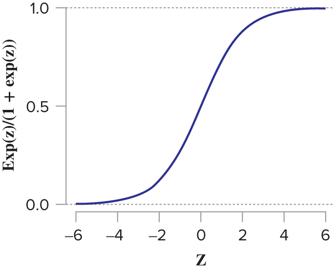
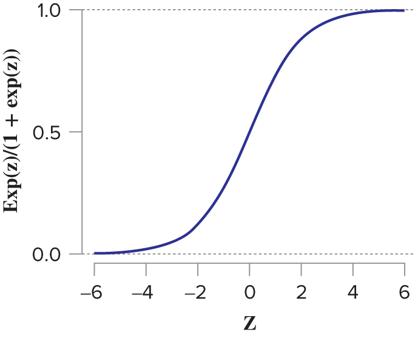
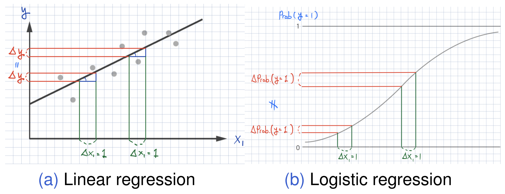
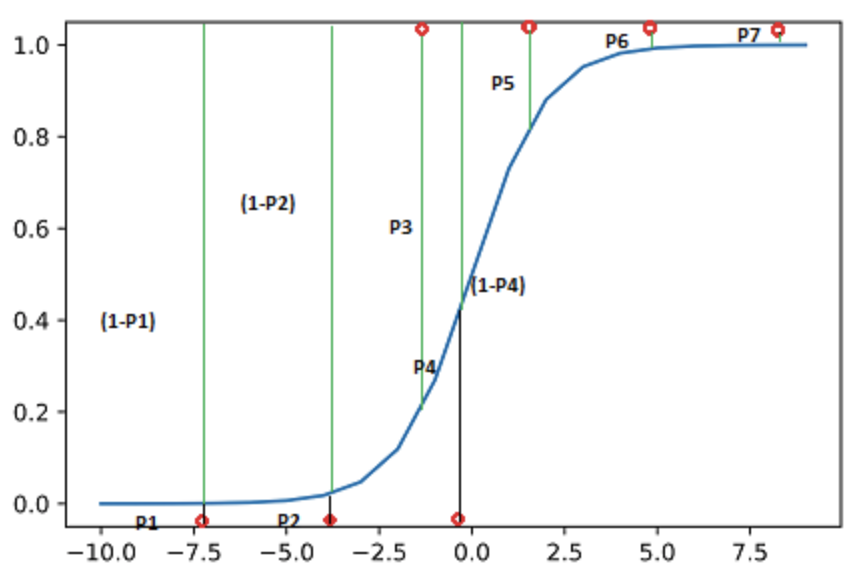

knitr::include_graphics('lec_figs/mba-1-11.png')
Machine Learning Lab
\[ \begin{align} \mathbb{E}[\, y \,|\, \mathbf{X} \,] &= \beta_{0} \,+\, \beta_{1}\,x_{1} \,+\, \cdots \,+\, \beta_{p}\,x_{p}\\ { }\\ y_{i} &= \beta_{0} \,+\, \beta_{1}\,x_{1, i} \,+\, \cdots \,+\, \beta_{p}\,x_{p, i} + \epsilon_{i} \quad \text{for } i = 1, 2, ..., n \end{align} \] - Logistic regression is used to model a binary response:
\(y\) is either 1 or 0 (e.g., True or False).
\(\epsilon_{i}\) is the random noise from logistic distribution whose cumulative density function is as follows:
knitr::include_graphics('lec_figs/mba-1-11.png')
where \(z\) is a linear combination of explanatory variables \(\mathbf{X}\).
\[ f(z) = \frac{e^{z}}{1 + e^{z}} \] - Since \(y\) is either 0 or 1, the conditional mean value of \(y\) is the probability:
\[ \begin{align} \mathbb{E}[\, y \,|\, \mathbf{X} \,] &= \text{Pr}(y = 1 | \mathbf{X}) \times 1 \,+\,\text{Pr}(y = 0 | \mathbf{X}) \times 0\\ &= \text{Pr}(y = 1 | \mathbf{X}) \\ { }\\ \text{Pr}(y = 1 | \mathbf{X}) &= f(\beta_{0} \,+\, \beta_{1}\,x_{1} \,+\, \cdots \,+\, \beta_{p}\,x_{p})\\ &= \frac{e^{\beta_{0} \,+\, \beta_{1}\,x_{1} \,+\, \cdots \,+\, \beta_{p}\,x_{p}}}{1 + e^{\beta_{0} \,+\, \beta_{1}\,x_{1} \,+\, \cdots \,+\, \beta_{p}\,x_{p}}} \\ \end{align} \]
\[ \begin{align} f( b_{0} + b_{1}*x_{i,1} + b_{2}*x_{i,2} + \cdots )\notag \end{align} \]
is the best possible estimate of the binary outcome \(y_{i}\).
knitr::include_graphics('lec_figs/effect-linear-logit.png')
We are estimating the conditional expectation (mean) for \(y\): \[ \text{Pr}(\, y \,|\, \mathbf{X} \,) = f(\beta_{0} \,+\, \beta_{1}\,x_{1} \,+\, \cdots \,+\, \beta_{p}\,x_{p}). \]
which is the probability that \(y = 1\) given the value for \(X\) from the logistic function.
Prediction from the logistic regression with a threshold on the probabilities can be used as a classifier.
i is at risk is greater than the threshold \(\theta\in (0, 1)\) (\(\text{Pr}(y_{i} = 1 | \mathbf{X}) > \theta\)), the baby i is classified as at-risk.We can discuss the performance of classifiers later.
We can average the marginal effects across the training data (average marginal effect, or AME).
We can obtain the marginal effect at an average observation or representative observations in the training data (marginal effect at the mean or at representative values).
We can also consider:
The AME for subgroup of the data
The AME at the mean value of VARIABLE.
Task 1. Identify the effects of several risk factors on the probability of atRisk == TRUE. Task 2. Classify ahead of time babies with a higher probability of atRisk == TRUE.
# install.packages("margins")
library(tidyverse)
library(margins) # for AME
library(hrbrthemes) # for ggplot theme, theme_ipsum()
library(stargazer)
theme_set(theme_ipsum()) # setting theme_ipsum() default
load(url("https://bcdanl.github.io/data/NatalRiskData.rData"))
# 50:50 split between training and testing data
train <- filter(sdata,
ORIGRANDGROUP <= 5)
test <- filter(sdata,
ORIGRANDGROUP > 5)
skim(train)| Name | train |
| Number of rows | 14212 |
| Number of columns | 15 |
| _______________________ | |
| Column type frequency: | |
| factor | 2 |
| logical | 9 |
| numeric | 4 |
| ________________________ | |
| Group variables | None |
Variable type: factor
| skim_variable | n_missing | complete_rate | ordered | n_unique | top_counts |
|---|---|---|---|---|---|
| GESTREC3 | 0 | 1 | FALSE | 2 | >= : 12651, < 3: 1561 |
| DPLURAL | 0 | 1 | FALSE | 3 | sin: 13761, twi: 424, tri: 27 |
Variable type: logical
| skim_variable | n_missing | complete_rate | mean | count |
|---|---|---|---|---|
| CIG_REC | 0 | 1 | 0.09 | FAL: 12913, TRU: 1299 |
| ULD_MECO | 0 | 1 | 0.05 | FAL: 13542, TRU: 670 |
| ULD_PRECIP | 0 | 1 | 0.03 | FAL: 13854, TRU: 358 |
| ULD_BREECH | 0 | 1 | 0.06 | FAL: 13316, TRU: 896 |
| URF_DIAB | 0 | 1 | 0.05 | FAL: 13450, TRU: 762 |
| URF_CHYPER | 0 | 1 | 0.01 | FAL: 14046, TRU: 166 |
| URF_PHYPER | 0 | 1 | 0.04 | FAL: 13595, TRU: 617 |
| URF_ECLAM | 0 | 1 | 0.00 | FAL: 14181, TRU: 31 |
| atRisk | 0 | 1 | 0.02 | FAL: 13939, TRU: 273 |
Variable type: numeric
| skim_variable | n_missing | complete_rate | mean | sd | p0 | p25 | p50 | p75 | p100 | hist |
|---|---|---|---|---|---|---|---|---|---|---|
| PWGT | 0 | 1 | 153.28 | 38.87 | 74 | 125 | 145 | 172 | 375 | ▆▇▂▁▁ |
| UPREVIS | 0 | 1 | 11.17 | 4.02 | 0 | 9 | 11 | 13 | 49 | ▃▇▁▁▁ |
| DBWT | 0 | 1 | 3276.02 | 582.91 | 265 | 2985 | 3317 | 3632 | 6165 | ▁▁▇▂▁ |
| ORIGRANDGROUP | 0 | 1 | 2.53 | 1.70 | 0 | 1 | 3 | 4 | 5 | ▇▅▅▅▅ |
# linear probability model
lpm <- lm(atRisk ~ CIG_REC + GESTREC3 + DPLURAL +
ULD_MECO + ULD_PRECIP + ULD_BREECH +
URF_DIAB + URF_CHYPER + URF_PHYPER + URF_ECLAM,
data = train)LPM often works well when it comes to identifying AME.
Caveats
glm( family = binomial(link = "logit") )model <- glm(atRisk ~ PWGT + UPREVIS + CIG_REC + GESTREC3 + DPLURAL +
ULD_MECO + ULD_PRECIP + ULD_BREECH +
URF_DIAB + URF_CHYPER + URF_PHYPER + URF_ECLAM,
data = train,
family = binomial(link = "logit") )
stargazer(model, type = 'html')| Dependent variable: | |
| atRisk | |
| PWGT | 0.004** |
| (0.001) | |
| UPREVIS | -0.063*** |
| (0.015) | |
| CIG_REC | 0.313* |
| (0.187) | |
| GESTREC3< 37 weeks | 1.545*** |
| (0.141) | |
| DPLURALtriplet or higher | 1.394*** |
| (0.499) | |
| DPLURALtwin | 0.312 |
| (0.241) | |
| ULD_MECO | 0.818*** |
| (0.236) | |
| ULD_PRECIP | 0.192 |
| (0.358) | |
| ULD_BREECH | 0.749*** |
| (0.178) | |
| URF_DIAB | -0.346 |
| (0.288) | |
| URF_CHYPER | 0.560 |
| (0.390) | |
| URF_PHYPER | 0.162 |
| (0.250) | |
| URF_ECLAM | 0.498 |
| (0.777) | |
| Constant | -4.412*** |
| (0.289) | |
| Observations | 14,212 |
| Log Likelihood | -1,231.496 |
| Akaike Inf. Crit. | 2,490.992 |
| Note: | p<0.1; p<0.05; p<0.01 |
summary(model)
Call:
glm(formula = atRisk ~ PWGT + UPREVIS + CIG_REC + GESTREC3 +
DPLURAL + ULD_MECO + ULD_PRECIP + ULD_BREECH + URF_DIAB +
URF_CHYPER + URF_PHYPER + URF_ECLAM, family = binomial(link = "logit"),
data = train)
Deviance Residuals:
Min 1Q Median 3Q Max
-0.9732 -0.1818 -0.1511 -0.1358 3.2641
Coefficients:
Estimate Std. Error z value Pr(>|z|)
(Intercept) -4.412189 0.289352 -15.249 < 2e-16 ***
PWGT 0.003762 0.001487 2.530 0.011417 *
UPREVIS -0.063289 0.015252 -4.150 3.33e-05 ***
CIG_RECTRUE 0.313169 0.187230 1.673 0.094398 .
GESTREC3< 37 weeks 1.545183 0.140795 10.975 < 2e-16 ***
DPLURALtriplet or higher 1.394193 0.498866 2.795 0.005194 **
DPLURALtwin 0.312319 0.241088 1.295 0.195163
ULD_MECOTRUE 0.818426 0.235798 3.471 0.000519 ***
ULD_PRECIPTRUE 0.191720 0.357680 0.536 0.591951
ULD_BREECHTRUE 0.749237 0.178129 4.206 2.60e-05 ***
URF_DIABTRUE -0.346467 0.287514 -1.205 0.228187
URF_CHYPERTRUE 0.560025 0.389678 1.437 0.150676
URF_PHYPERTRUE 0.161599 0.250003 0.646 0.518029
URF_ECLAMTRUE 0.498064 0.776948 0.641 0.521489
---
Signif. codes: 0 '***' 0.001 '**' 0.01 '*' 0.05 '.' 0.1 ' ' 1
(Dispersion parameter for binomial family taken to be 1)
Null deviance: 2698.7 on 14211 degrees of freedom
Residual deviance: 2463.0 on 14198 degrees of freedom
AIC: 2491
Number of Fisher Scoring iterations: 7Logistic regression finds the beta parameters that maximize the log likelihood of the data, given the model, which is equivalent to minimizing the sum of the residual deviance.
knitr::include_graphics('lec_figs/logistic_likelihood.png')
Deviance measures to the distance between data and fit
The null deviance is similar to the variance of the data around the average rate of positive examples.
# likelihood function for logistic regression
## y: the outcome in numeric form, either 1 or 0
## py: the predicted probability that y == 1
loglikelihood <- function(y, py) {
sum( y * log(py) + (1-y)*log(1 - py) )
}
# the rate of positive example in the dataset
pnull <- mean( as.numeric(train$atRisk) )
# the null deviance
null.dev <- -2 *loglikelihood(as.numeric(train$atRisk), pnull)
# the null deviance from summary(model)
model$null.deviance[1] 2698.716# the predicted probability for the training data
pred <- predict(model, newdata=train, type = "response")
# the residual deviance
resid.dev <- -2 * loglikelihood(as.numeric(train$atRisk), pred)
# the residual deviance from summary(model)
model$deviance[1] 2462.992# the AIC
AIC <- 2 * ( length( model$coefficients ) -
loglikelihood( as.numeric(train$atRisk), pred) )
AIC[1] 2490.992model$aic[1] 2490.992# the pseudo R-squared
pseudo_r2 <- 1 - (resid.dev / null.dev)train$pred <- predict(model, newdata=train, type = "response")
test$pred <- predict(model, newdata=test, type="response")
sum(train$atRisk == TRUE)[1] 273sum(train$pred)[1] 273premature <- subset(train, GESTREC3 == "< 37 weeks")
sum(premature$atRisk == TRUE)[1] 112sum(premature$pred)[1] 112m <- margins(model)
ame_result <- summary(m)
ame_result factor AME SE z p lower upper
CIG_REC 0.0064 0.0043 1.5000 0.1336 -0.0020 0.0148
DPLURALtriplet or higher 0.0484 0.0290 1.6677 0.0954 -0.0085 0.1052
DPLURALtwin 0.0064 0.0056 1.1480 0.2510 -0.0045 0.0173
GESTREC3< 37 weeks 0.0450 0.0062 7.2235 0.0000 0.0328 0.0571
PWGT 0.0001 0.0000 2.5096 0.0121 0.0000 0.0001
ULD_BREECH 0.0181 0.0056 3.2510 0.0012 0.0072 0.0290
ULD_MECO 0.0211 0.0082 2.5718 0.0101 0.0050 0.0371
ULD_PRECIP 0.0038 0.0077 0.4946 0.6209 -0.0113 0.0189
UPREVIS -0.0012 0.0003 -4.0631 0.0000 -0.0017 -0.0006
URF_CHYPER 0.0131 0.0115 1.1437 0.2528 -0.0094 0.0356
URF_DIAB -0.0055 0.0040 -1.3887 0.1649 -0.0133 0.0023
URF_ECLAM 0.0114 0.0220 0.5196 0.6033 -0.0317 0.0545
URF_PHYPER 0.0031 0.0052 0.6066 0.5441 -0.0070 0.0133ggplot(data = ame_result) +
geom_point( aes(factor, AME) ) +
geom_errorbar(aes(x = factor, ymin = lower, ymax = upper),
width = .5) +
geom_hline(yintercept = 0) +
coord_flip()